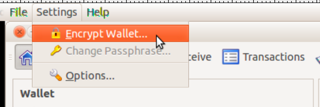
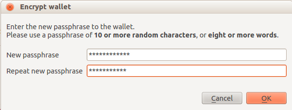

COMO CRIAR A SUA CARTEIRA?
Existem 2 maneiras de se criar a sua carteira:
Opção 1 - Instalando o programa Dilmacoin em seu computador (Opção para usuários avançados)
Ao iniciar, a carteira irá tentar entrar em sincronia com a rede, algo que deve dermorar +/- 1 minuto. Se isso não acontecer, será necessário que você realize um ajuste no arquivo de configuração da carteira.
No windows, este é o arquivo: C:\Documents and Settings\[Username]\Application Data\Dilmacoin2\dilmacoin.conf
Abra ele e coloque as seguintes informações:
addnode=24.90.156.217
addnode= 166.78.120.112
addnode=54.84.229.24
Fazer direto do código fonte(Linux ou Mac): http://github.com/Dilmacoin/dilmacoin
Opção 2 - Criando uma carteira online [EM DESENVOLVIMENTO]
- Vá até http://dilmacoin.info/
- Clique em “Crie a sua conta”
- Coloque o seu email, e uma senha de pelo menos 10 letras
- Importante lembrar que se você esquecer sua senha, suas dilmas serão perdidas, pois o site não armazena a sua senha (isso seria uma falha de segurança, uma vez que as pessoas que operam o site poderiam usar a sua senha para movimentar a sua carteira, isso torna o sistema melhor e mais seguro que de um banco convencional)
Proteja a sua carteira
Quando você inicia o programa dilmacoin-qt.exe pela primeira vez, ele irá automaticamente criar um arquivo chamado wallet.dat, que irá conter a sua chave privada.
Localização do arquivo wallet.dat:
[windows] C:\Documents and Settings\[Username]\Application Data\Dilmacoin2\wallet.dat
[mac] ~/Library/Application Support/Dilmacoin2/wallet.dat
[linix] ~/.dilmacoin2/wallet.dat
Se algum hacker conseguir copiar este arquivo, ele irá poder então roubar as suas moedas.
Você pode proteger este arquivo criptografando ele com uma senha, porém, mas cuidado, se você colocar uma senha fraca, com menos de 10 caracteres, um hacker conseguirá facilmente em questão de dias descobrir a sua senha, portanto, é recomendável que você escolha uma senha bem forte.
CUIDADO EXTRA: Se você usar uma senha para proteger sua carteira e por ventura se esquececer dela, todos as suas moedas serão perdidas para sempre.
CUIDADO EXTRA DOBRADO: Se você perder o arquivo wallet.dat, ou seu computador der uma pane de forma que você não consiga mais recuperar este arquivo, todas as suas moedas serão perdidas para sempre. Então é importante além de você proteger com senha, também realizar um backup da sua carteira. E nunca, jamais, em hipotese alguma, armazene o backup de uma carteira desprotegida por senha, pois qualquer pessoa c/ acesso ao backup poderia gastar suas moedas.
O único incoveniente de proteger sua carteira com uma senha é o fato de que sempre que você tentar enviar qualquer quantia para qualquer pessoa, você terá de digitar a sua senha.